목차
1. LOT 추적성 관리의 목적 및 용어 설명
3. LOT 추적성 관리 (이동전표 작성 예)
2. LOT 추적성 관리방안
4. LOT 추적성 관리 (작업일보 및 이동전표 작성방법)
5. LOT 추적성 관리 (부착 사진)
1. LOT 추적성 관리의 목적 및 용어 설명
1. 목 적 : 품질문제 발생시 즉시 제조경로를 추적하여 대책을 수립하며,
고객불만, 클레임 등을 최소화 하기 위하여 관리함을 목적으로 한다.
2. 용어 설명
1) 소재 Heat No : 소재 제조사에서 각 소재마다 부여하는 제작번호로써
MILL SHEET (거래명세서)에 표시됨.
2) 원자재 LOT-NO : 사내 자재 담당자가 소재 입고시 각 소재마다 부여하는 고유번호.
3) 가공 LOT NO : 원자재 LOT-NO가 부여된 소재를 CNC 가공 할 시 부여하는 고유번호.
4) 작업일보 : 각 공정 작업자가 생산한 정보를 작성, 기록을 남기는 기록지로써
앞공정 LOT-NO (생산일+작업자 고유영문), 생산자명, 품번, 수량을 기록함.
5) 부품(공정)이동표 : 제품 생산시 기종, 품명, 품번, 수량, LOT-NO, 작업일자, 작업수량,
작업자명 등을 표기하여 후공정으로 이동시 제품 용기에 붙이는 것.
2. LOT 추적성 관리 방안
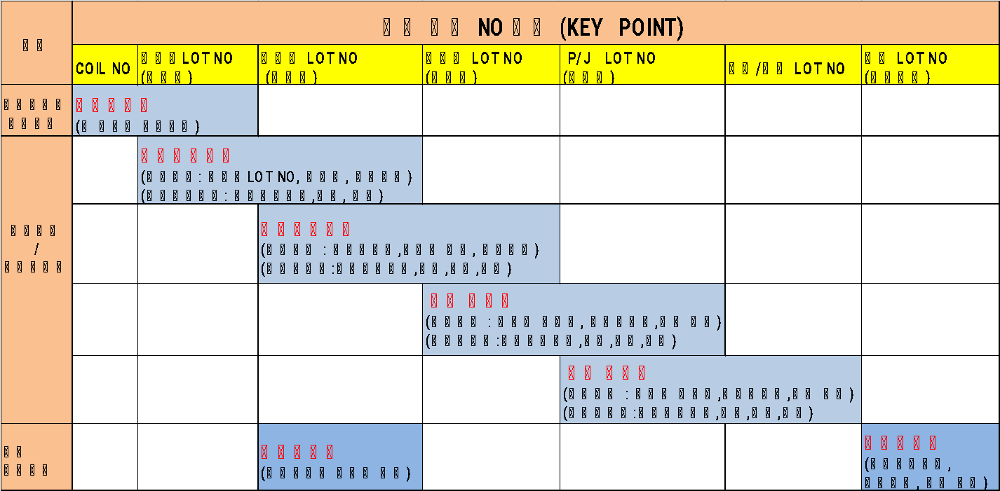
필요자료 : 작업일보,공정이동전표(꼬리식별표)
3. 공정이송표 작성 (예)
▣ 각 공정별 작성 예
공정명 | 1. 소재 입고 | 공정이동전표 작성 예시 | ||
SKETCH | ||||
비고 | ||||
소재 식별표 제조번호(Heat No) 기재 6. ⑤에 대한 박스 수량 및 팔레트(1PLT)
소재 식별표 수량 기재 7. “A” 최초 공정 (작업일/공정/생산수량 ⑤항목 일치/작업자/공정검사)
소재 공급 업체 기재 8. “B” 최초 공정에서 후공정 이동시 해당작업자는 전표 확인후 작성
생산 품번 기재 9. “C.D,F” 상기 내용과 동일하게 확인하여 작성을 한다
①,② 대한 작업 수량 기재 10. 작업시 부분적으로 부품 이동시 메인 내용을 필히 작성을 하여야한다
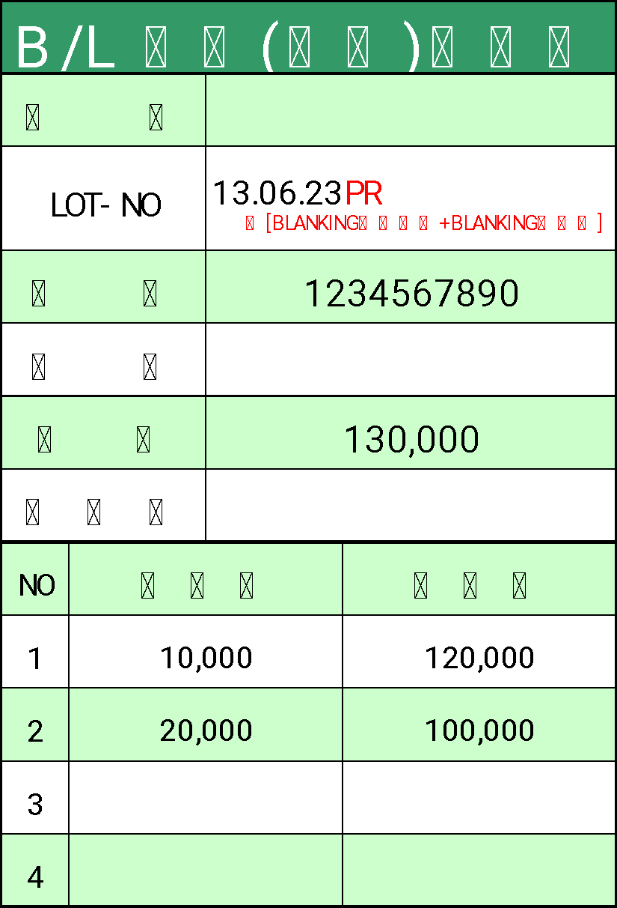
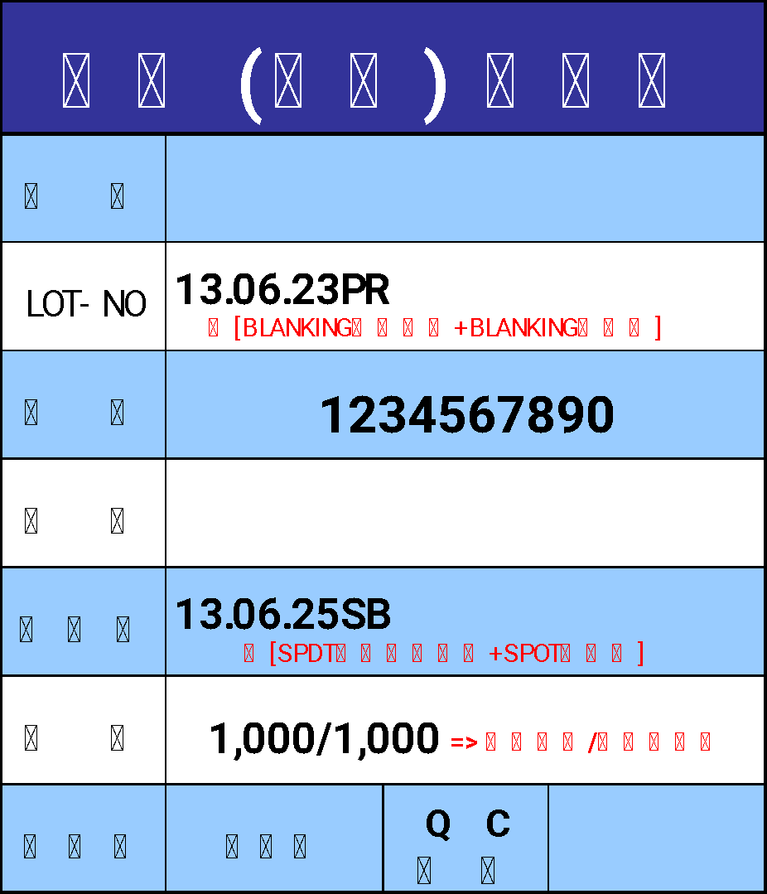
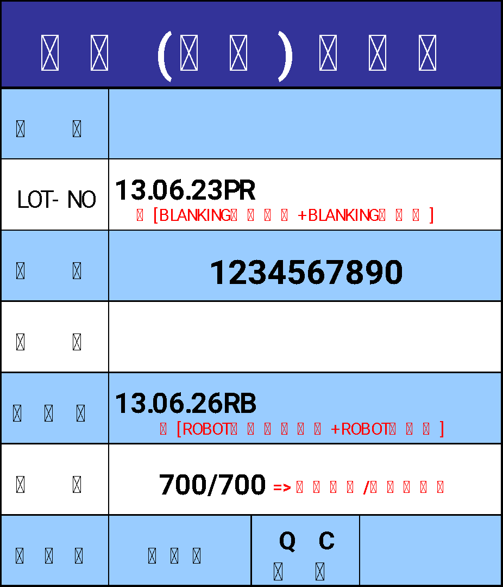
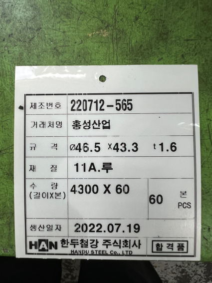
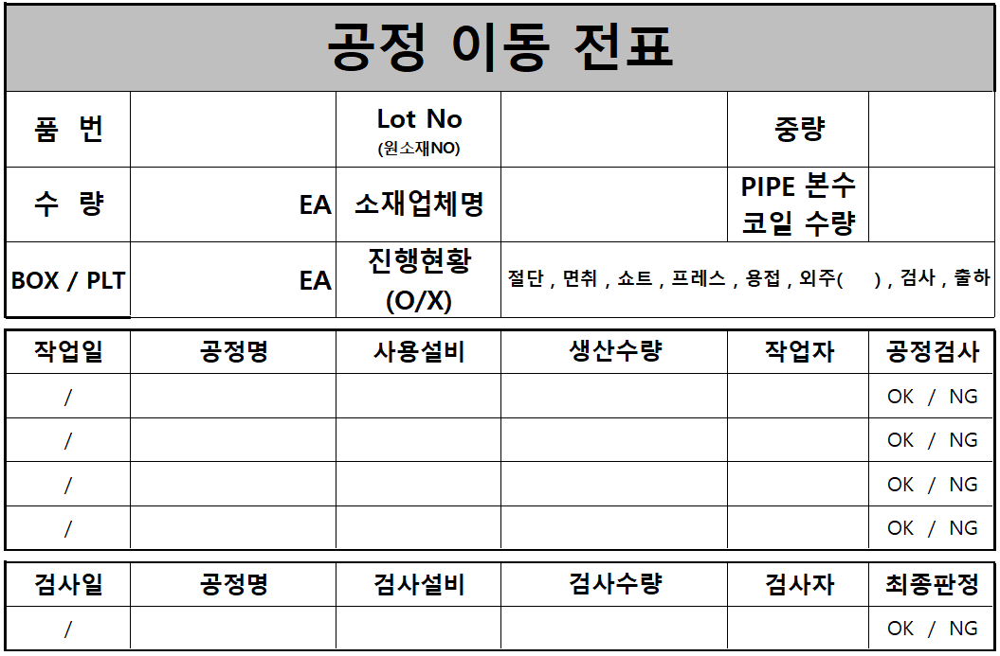
①
①
②
②
③
③
④
⑤
⑥
A
B
C
D
F
메인
3. 공정이송표 작성 (예)
▣ 각 공정별 작성 예
공정명 | 1. 소재 입고 | 공정이동전표 작성 예시 | ||
SKETCH | ||||
비고 | ||||
식별표 제조번호 기재 6. ⑤에 대한 박스 수량 및 팔레트(1PLT)
소재중량 / 소재수량 기재 7. “A” 최초 공정 (작업일/공정/생산수량 ⑤항목 일치/작업자/공정검사)
생산 업체 기재 8. “B” 최초 공정에서 후공정 이동시 해당작업자는 전표 확인후 작성
생산 품번 기재 9. “C.D,F” 상기 내용과 동일하게 확인하여 작성을 한다
①,② 대한 작업 수량 기재 10. 작업시 부분적으로 부품 이동시 메인 내용을 필히 작성을 하여야한다
①
②
③
④
⑤
⑥
A
B
C
D
F
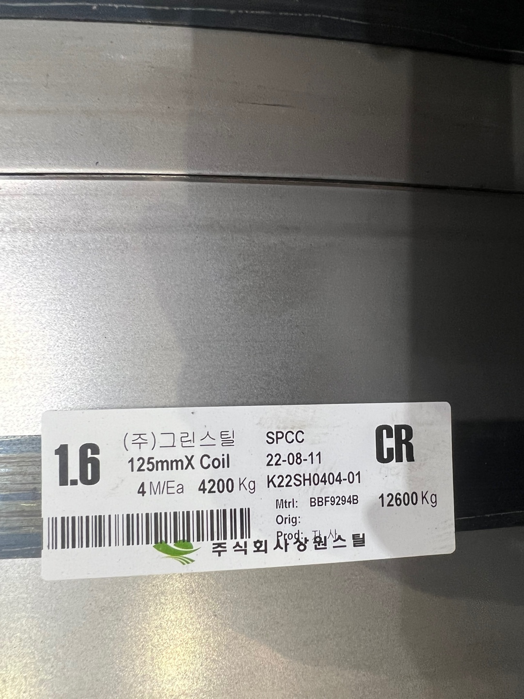
①
②
②
③
4. 각 공정 작업일보 및 공정이송표 작성요령
▣ CNC 가공 작업자 작성요령
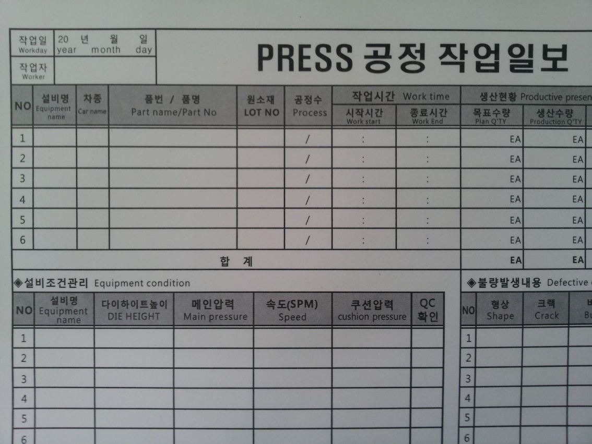
작업일, 작업자, 기종, 품번, 원소재 LOT NO,
공정수, 생산수량 기록
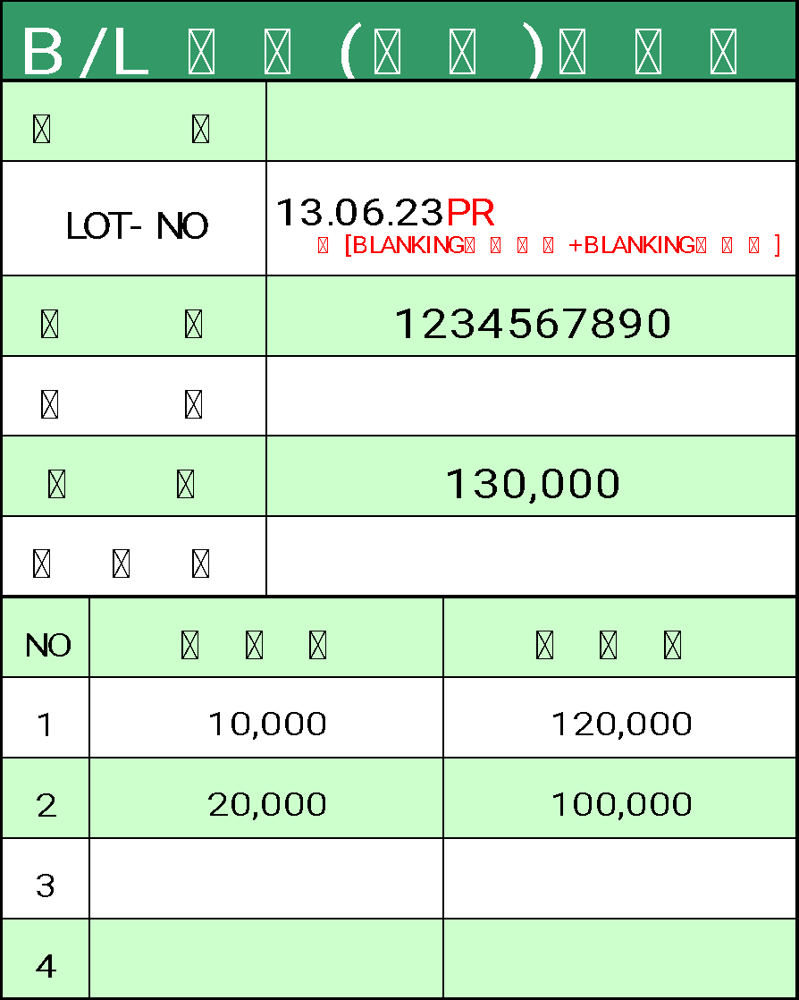
4. 각 공정 작업일보 및 공정이송표 작성요령
▣ Lapping/Polishing 작업자 작성요령
작업일, 작업자, 기종, 품번, 가공 LOT NO,
공정수, 생산수량 기록
가공 LOT NO
( 생산일자)
4. 각 공정 작업일보 및 공정이송표 작성요령
▣ 세척/검사 작업자 작성요령
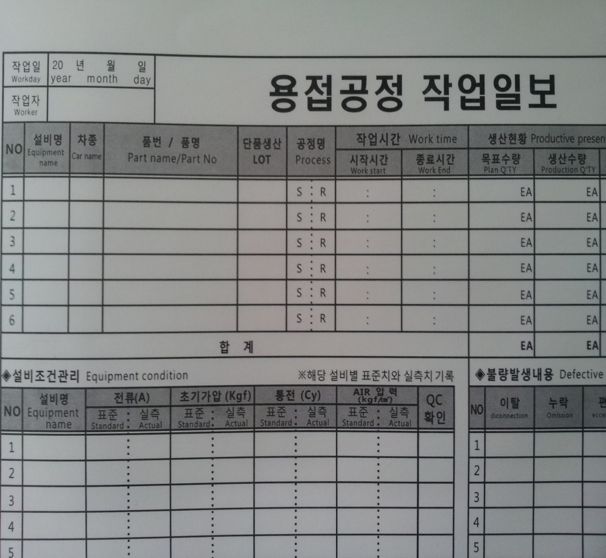
앞공정 LOT NO
(생산일자)
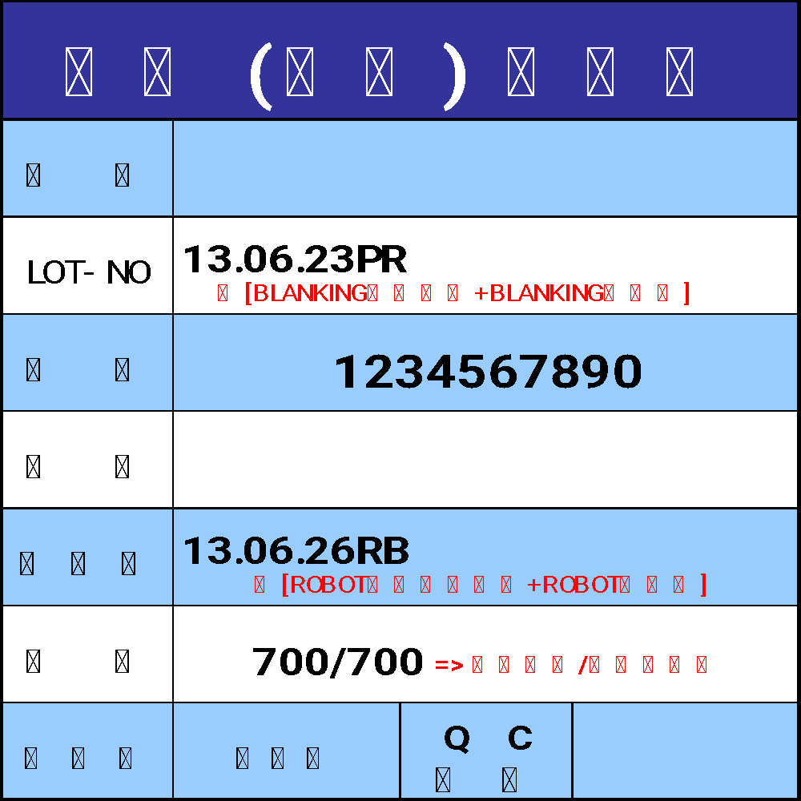